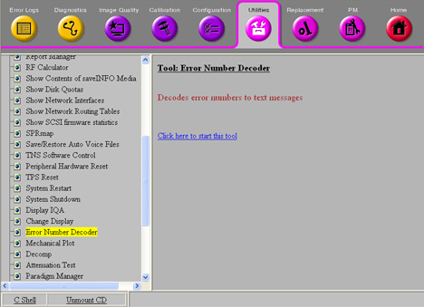

Proprietary to General Electric
Direction 5500113, Rev# 3
Discovery MR750 3.0T Service Methods
Module Version 3.0, Version Date 7/8/08
Proprietary to General Electric |
Utilities >> Error Number Decoder
Illustration 1: Error Number Detector

The Error Number Decoder Tool displays the message text associated with a specific error number.
From the Service Desktop, select the [Utilities] tab. See Illustration 1.
Click [Error Number Decoder], then select the [Click here to start this tool] link.
The Decoder tool starts in a window with the prompt Please enter the error No. (s or q to quit).
Enter the appropriate error number. The system displays the corresponding message text.